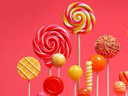

A lollipop is a type of sugar candy usually consisting of hard candy mounted on a stick and intended for sucking or licking. Different informal terms are used in different places, including lolly, sucker, sticky-pop, etc. Lollipops are available in many flavors and shapes.

Skkutty & co lallipop
The Product used in lallipop
- high quality of sugar
- use good flavours choloates
- we use different type of clours
| Dtaes |
Discovers |
| 1908-1931 |
Time to discover the first lallipop |
| Skkutty |
since 2018 |
| Skkutty |
Founder of company |